دليل توثيقي شامل وتفصيلي يشرح كل واجهة، وكل جزء مرئي، وكل زر، وكل خاصية، مع الأسس الرياضية والهندسية للالتفاف المكاني، والمدرج التكراري اللحظي، ومحرك الفرشاة التنعيمية، ونموذج الذكاء الاصطناعي IS-Net، واختبارات الجودة.
تم تصميم بنية الواجهة التفاعلية لنظام ImagePro Studio وفق المعيار الاحترافي المزدوج (Two-Tier UI Architecture)، الذي يوفر وصولاً سريعاً لجميع الوظائف المعقدة دون تشويش بصري، مع دعم التبديل الديناميكي الكامل بين الوضع الفاتح والوضع الليلي (Dark Studio Mode).
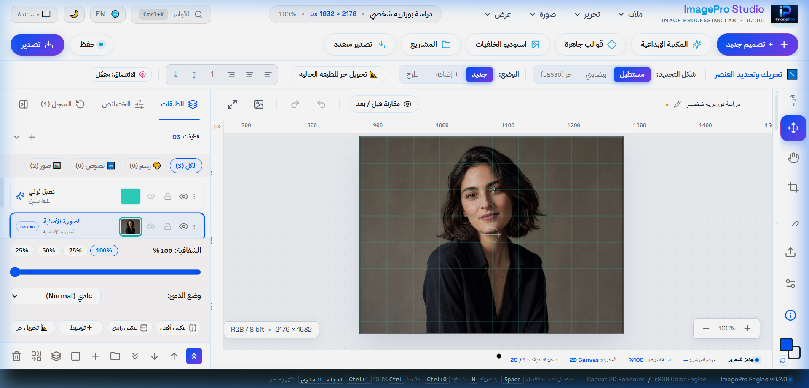
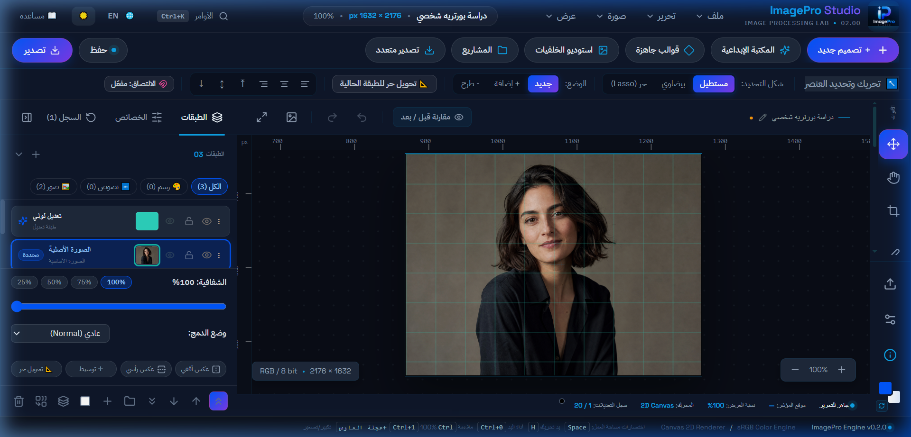
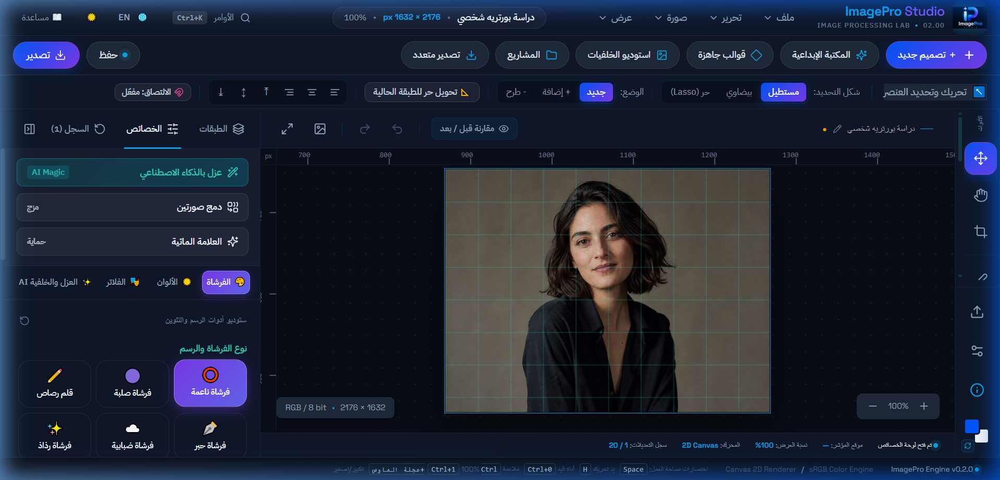
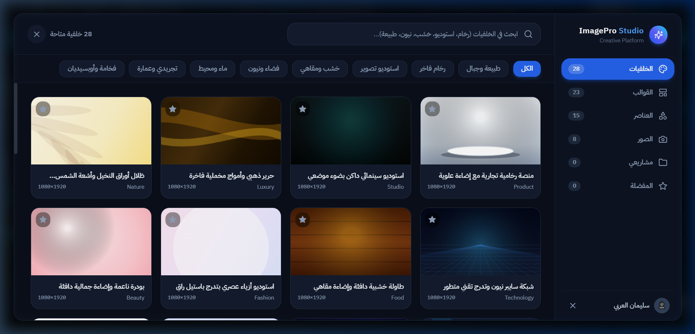
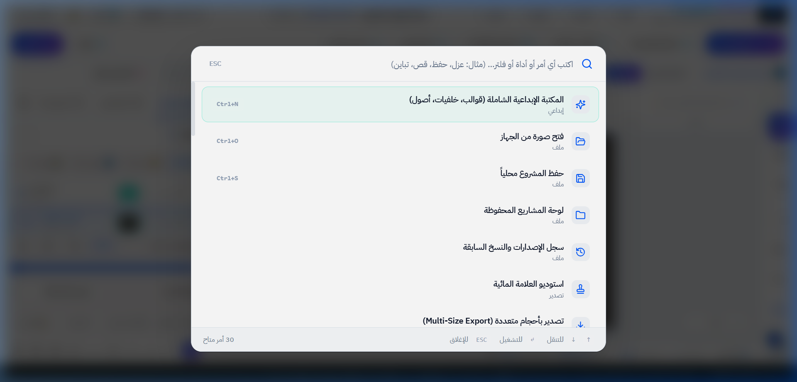
توفر المنصة مجموعة من الاستوديوهات والنوافذ المتخصصة التي تختصر على المصمم ساعات طويلة من الإعداد والتنسيق اليدوي، بدءاً من تهيئة أبعاد المشاريع وحتى الأصول الجاهزة وإدارة المشاريع المحلية.
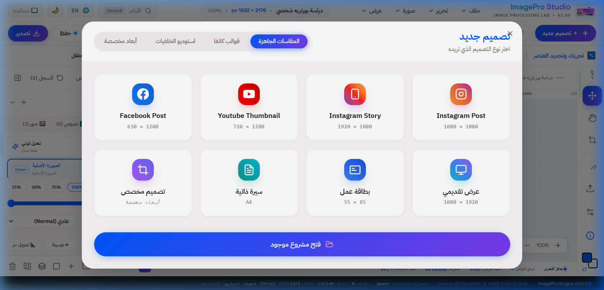
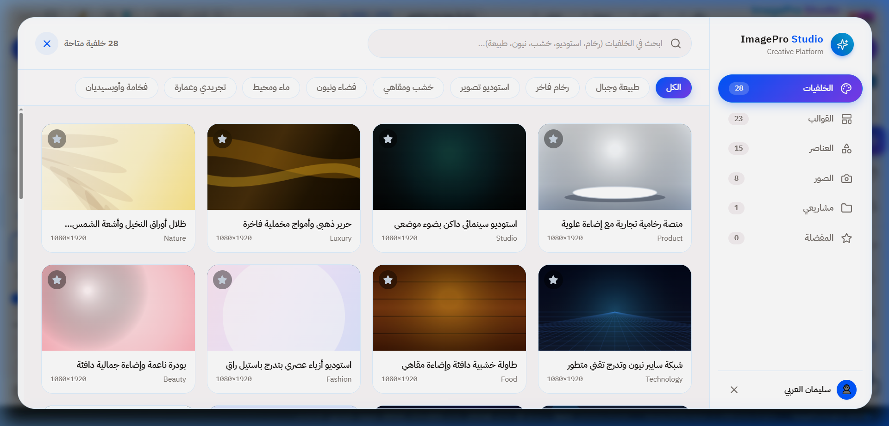
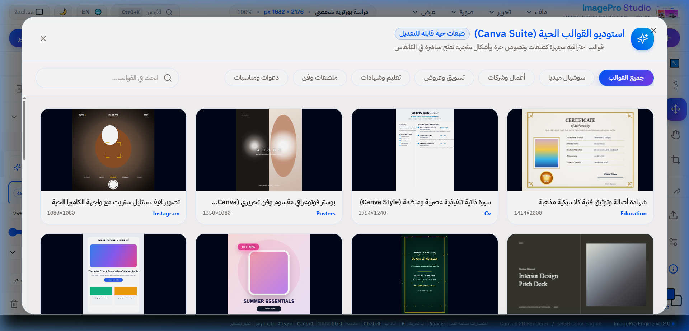
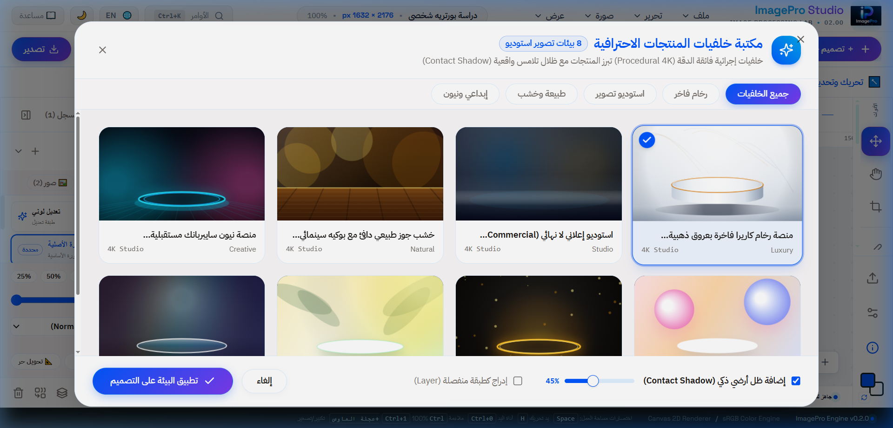
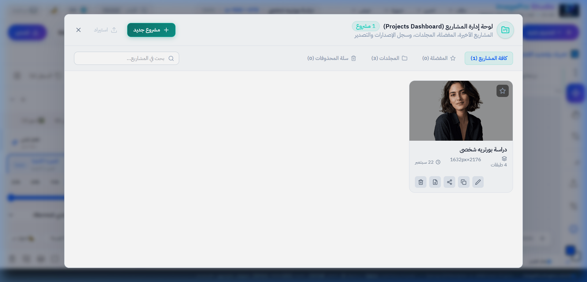
تم بناء وتحديث محركات المعالجة الرقمية في ImagePro Studio بالاعتماد على خوارزميات رياضية دقيقة تعمل مباشرة على مصفوفات البكسلات Uint8ClampedArray مع تسريع حركي كامل واستجابة لحظية.
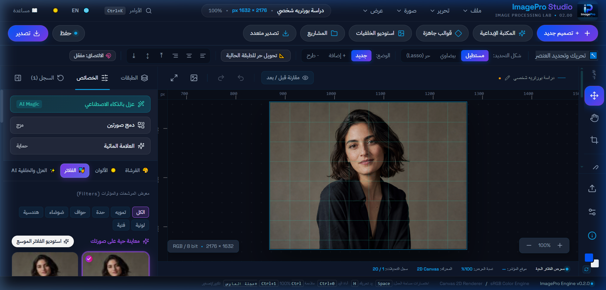
تعتمد الفلاتر على تطبيق مصفوفة نواة الالتفاف $K$ بحجم $(2k+1) \times (2k+1)$ على كل بكسل في الصورة الأصلية:
على سبيل المثال، في كاشف سوبل يتم حساب المشتقات الأفقية $G_x$ والعمودية $G_y$ ثم حساب المقدار التدرجي:
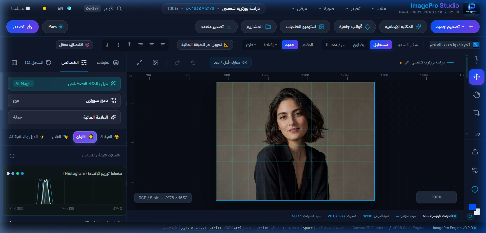
1. معادلة السطوع والتباين الخطية مع القطع (Clamping):
2. معادلة تصحيح جاما غير الخطية (Non-linear Gamma Correction):
3. حساب الهستوجرام بمسح أحادي O(N):
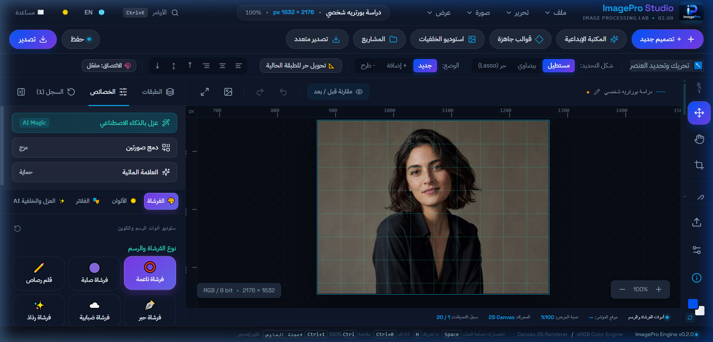
1. خوارزمية تنعيم نقاط المنتصف التربيعية (Bezier Midpoint Smoothing):
2. خوارزمية الملء الفيضاني (BFS Flood Fill):
تعتمد أداة الطلاء على طابور استكشاف رباعي الاتجاه (4-way FIFO queue) لمقارنة المسافة اللونية الإقليدية في فضاء RGB مع نسبة التسامح:
تم تزويد المنصة بنموذج التعلم العميق المتطور IS-Net (Dichotomous Image Segmentation) المشغل محلياً وسحابياً، والذي يقوم بفصل الأجسام بدقة متناهية تشمل أدق التفاصيل كخصلات الشعر وحواف الأقمشة دون ترك أي شوائب لونية.
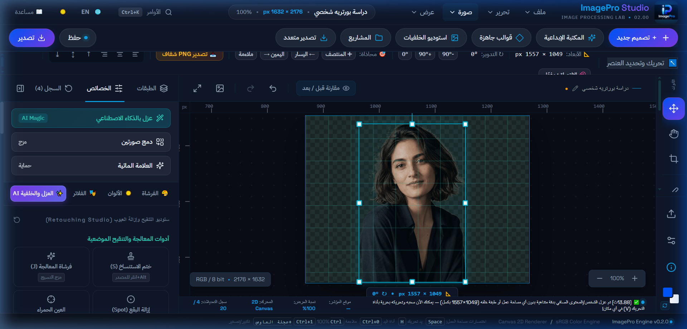
يعتمد نموذج IS-Net على التجزئة الثنائية التكرارية فائقة الدقة (Dichotomous Segmentation)، حيث يدمج بين مستويات التجريد العالية (High-Level Semantics) للتفريق بين الجسم والخلفية، ومستويات الدقة المنخفضة (Low-Level Boundary Features) لترسيم الحواف الدقيقة عبر قناع ماتنج دقيق:
لتأمين حقوق الملكية الفكرية للمصورين، وتسريع نشر الأعمال الفنية عبر المنصات الرقمية، يوفر النظام استوديو متطور للعلامات المائية ومحرك تصدير متعدد الأبعاد ينتج حزماً مجهزة للتحميل بنقرة واحدة.
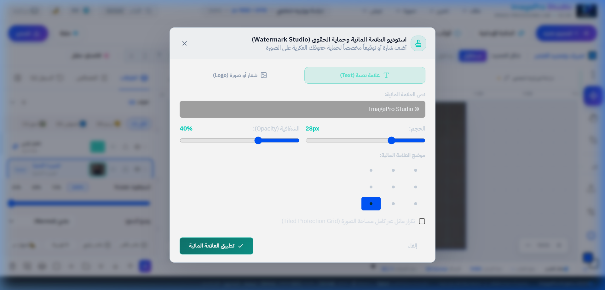
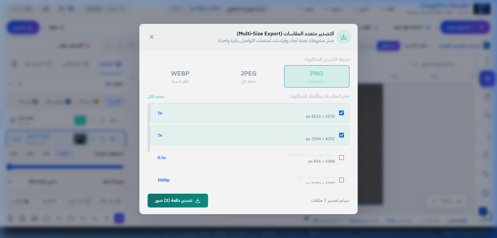
يخضع النظام لبيئة فحص صارمة مبنية على إطار Vitest 2.1، حيث تجتاز الشيفرة البرمجية 70 اختبار وحدة عبر 16 ملف فحص بنسبة نجاح تامة 100% لضمان متانة كافة المحركات الرياضية والخوارزميات:
| ملف الاختبار البرمجي | نطاق الفحص والتحقق الهندسي | عدد الاختبارات | الحالة والنتيجة |
|---|---|---|---|
phase5-layers.test.ts | معمارية الطبقات، المزج، والأقنعة غير التدميرية | 14 | ✅ ناجح 100% |
retouch-engine.test.ts | أدوات التنقيح (ختم النسخ، المعالجة، وتنعيم البشرة) | 7 | ✅ ناجح 100% |
selection.test.ts | محرك التحديد الهندسي والعمليات المنطقية والتسامح | 7 | ✅ ناجح 100% |
subject-extractor.test.ts | نموذج الذكاء الاصطناعي، عزل العناصر، والبوكيه | 6 | ✅ ناجح 100% |
filters-engine.test.ts | الفلاتر الـ 21 والالتفاف المكاني ومصفوفات النواة | 5 | ✅ ناجح 100% |
smart-drop-hub.test.ts | مركز السحب والإفلات وتوجيه الأصول للكانفاس | 5 | ✅ ناجح 100% |
guides-snap-engine.test.ts | المساطر التفاعلية والمغنطة الذكية والمحاذاة | 4 | ✅ ناجح 100% |
drawing-engine.test.ts | الفرشاة التنعيمية وأقواس بيزيه والملء الفيضاني BFS | 3 | ✅ ناجح 100% |
color-adjustments.test.ts | التعديلات الضوئية والمدرج التكراري اللحظي O(N) | 3 | ✅ ناجح 100% |
project-persistence.test.ts | حزم وتشفير ملفات المشاريع (.imagepro) | 3 | ✅ ناجح 100% |
autosave-manager.test.ts | الحفظ التلقائي المحلي IndexedDB وسجل المشاريع | 3 | ✅ ناجح 100% |
creative-backgrounds.test.ts | كتالوج الخلفيات الإبداعية الـ 17 فئة | 2 | ✅ ناجح 100% |
product-backgrounds.test.ts | استوديو خلفيات المنتجات والمنصات وتصيير الكانفاس | 2 | ✅ ناجح 100% |
editable-templates.test.ts | القوالب الجاهزة متعددة الطبقات وتفكيك العناصر | 2 | ✅ ناجح 100% |
templates.test.ts | مقاسات التصاميم والمنصات الرقمية المعيارية | 2 | ✅ ناجح 100% |
tool-contract.test.ts | تكامل عقود الأدوات ومزامنة خيارات الواجهة | 2 | ✅ ناجح 100% |
| المجموع الإجمالي | تغطية شاملة وموثقة لكافة محركات ووحدات النظام | 70 | ✅ 70 / 70 بنجاح تام |
يقدم مشروع ImagePro Studio نموذجاً هندسياً رائداً وتطبيقاً حقيقياً لمنصة تصميم ومعالجة صور رقمية فائقة التطور تعمل داخل متصفح الويب بكفاءة تضاهي البرمجيات المكتبية الضخمة، مع دعم كامل للوضعين النهاري والليلي، واستوديوهات إبداعية متكاملة، ونموذج ذكاء اصطناعي عصبي للعزل والتمويه، وضمان جودة كامل بنسبة نجاح 100%.